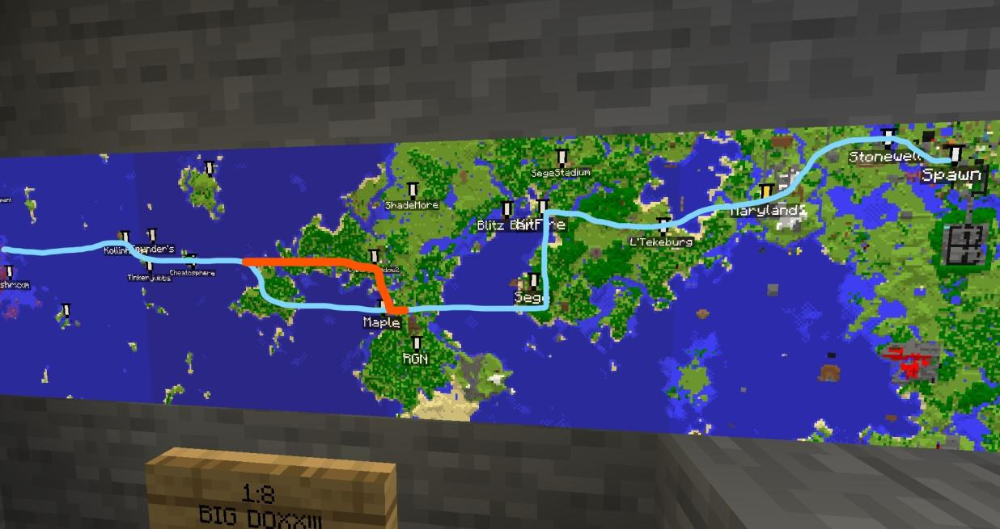
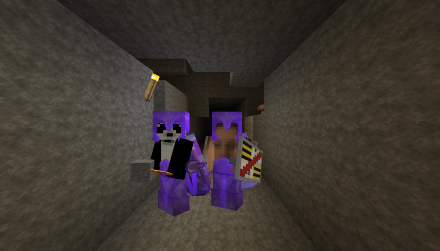

About Us
The Subway Construction Group was formed in order to facilitate the creation, documentation, and use of the subway system underneath the world. The main purpose of the group is to create standards and regulations on how subways are created, extended, and used, and Its secondary goal is to dig out tunnels and create the subway on the server.
The current website creator is Random, while the current Documentation team is Shimmering and Random. The people creating (or going to create) parts of the subway are listed below:
- ShimmeringStars
- ItsJoeyG
- Decjet
- Random
History
The first subway line was created from Mushxroom's base to Archipelago Town by ShimmeringStars and other members of Archipelago Town. The first map design was created by Shimmering as a general route overview, shown here:  Shimmering would go on to notify each of the owners of the areas above the pathway of the creation of a subway system, to which all accepted happily. Shimmering would also link a video of its use:Work would begin shortly on lines stretching from Maryland to Spawn and L'enfer to Spawn, with those lines meeting up in January 12 2023.

Shortly after, the first intersection would be made connecting the Maryland line to the Main line, marking the first intersection between lines. The tunnel going to Maryland would then be further dug out, stretching under L'tekeburg, taking a dip south to meet RGN, and then shooting west, connecting the Archipelago tunnel to the Main line in January 18 2023.